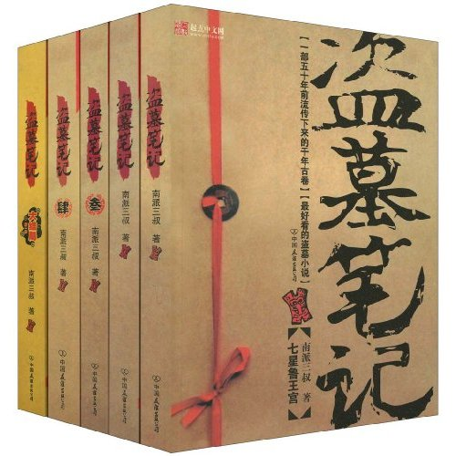

<!DOCTYPE html>
<html>
  <head>
    <meta charset="utf-8">
    <meta http-equiv="X-UA-Compatible" content="IE=edge">
    <title>D6 Demo</title>
    <meta name="description" content=": 369Cloud 致力于打造移动互联网云平台研发生态系统，将移动应用开发与移动应用云服务（BaaS、IaaS服务）完美集成，为开发者提供集成开发环境、移动应用开发引擎、基础服务、后端服务等一站式的移动应用开发解决方案；由369Cloud 自主研发的一体化开发流程，实现从应用创建、自定义认证、组件选择、模板配置、到混合平台编译等一系列可视化、可配置化操作，最大程度的为开发者及创业团队节约时间成本、人力成本、资金成本。
">
    <meta name="author" content="">
    <meta name="viewport" content="initial-scale=1, maximum-scale=1">
    <link rel="shortcut icon" href="/favicon.ico">
    <meta name="apple-mobile-web-app-capable" content="yes">
    <meta name="apple-mobile-web-app-status-bar-style" content="black">

    <link rel="stylesheet" href="/D6/dist/css/font-awesome.css">
    <link rel="stylesheet" href="/D6/dist/css/d6.css">
    <script src="/D6/dist/js/zepto.js"></script>
    <script src="/D6/dist/js/d6.js"></script>
  </head>
  <body>
    <style type="text/css">
      .ui-list-block{
        margin:0;
      }
    </style>
<div class="ui-list-block ui-media-list"></div>
<script>

domReady(function(require) {
    $('.ui-list-block').append('<ul></ul>').on('pullup', function(e, refresh) {
        pullupRefresh(refresh)
    }).on('pulldown', function(e, refresh) {
        pulldownRefresh(refresh)
    }).refresh().pullupLoading()
});
/**
 * 下拉加载具体业务实现
 */
function pulldownRefresh(refresh) {
    var self = refresh;
    setTimeout(function() {
        var ul = $('.ui-list-block ul');
        var len = ul.children().length
        for (var i = 1; i < 5; i++) {
            ul.prepend('<li><div class="ui-list-item-link ui-list-item-content">' +
                '<div class="ui-item-media"></div>' +
                '<div class="ui-list-item-inner">' +
                '<div class="ui-list-item-title-row">' +
                '<div class="ui-list-item-title">盗墓笔记 NO.' + (len + i) + '</div>' +
                '<div class="ui-list-item-after">￥150</div>' +
                '</div>' +
                '<div class="ui-media-item-subtitle">南派三叔</div>' +
                '<div class="ui-media-item-text">出身“老九门”世家的吴邪，因身为考古学家的父母在某次保护国家文物行动时被国外盗墓团伙杀害，吴家为保护吴邪安全将他送去德国读书，因而吴邪对“考古”事业有着与生俱来的兴趣，在一次护宝过程中他偶然获得一张记载着古墓秘密的战国帛书，为赶在不明势力之前解开帛书秘密，保护古墓中文物不受侵害，按照帛书的指引吴邪跟随三叔吴三省、潘子以及神秘小哥张起灵来到鲁殇王墓探究七星鲁王宫的秘密。 在古墓中，吴邪结识了前来探秘的王胖子并救下身份不明的阿宁，经过一系列惊险刺激匪夷所思的事件之后，众人又发现了更多未解的谜团。吴邪等人在和不明势力斗智斗勇的同时又踏上了新的探秘之旅。</div>' +
                '</div></div></li>');
        }
        self.endPulldownToRefresh(); //refresh completed
    }, 1500);
}
var count = 0;
/**
 * 上拉加载具体业务实现
 */
function pullupRefresh(refresh) {
    var self = refresh;
    setTimeout(function() {
        var ul = $('.ui-list-block ul');
        var len = ul.children().length
        for (var i = 1; i < 15; i++) {
            ul.prepend('<li><div class="ui-list-item-link ui-list-item-content">' +
                '<div class="ui-item-media"></div>' +
                '<div class="ui-list-item-inner">' +
                '<div class="ui-list-item-title-row">' +
                '<div class="ui-list-item-title">盗墓笔记 NO.' + (len + i) + '</div>' +
                '<div class="ui-list-item-after">￥150</div>' +
                '</div>' +
                '<div class="ui-media-item-subtitle">南派三叔</div>' +
                '<div class="ui-media-item-text">出身“老九门”世家的吴邪，因身为考古学家的父母在某次保护国家文物行动时被国外盗墓团伙杀害，吴家为保护吴邪安全将他送去德国读书，因而吴邪对“考古”事业有着与生俱来的兴趣，在一次护宝过程中他偶然获得一张记载着古墓秘密的战国帛书，为赶在不明势力之前解开帛书秘密，保护古墓中文物不受侵害，按照帛书的指引吴邪跟随三叔吴三省、潘子以及神秘小哥张起灵来到鲁殇王墓探究七星鲁王宫的秘密。 在古墓中，吴邪结识了前来探秘的王胖子并救下身份不明的阿宁，经过一系列惊险刺激匪夷所思的事件之后，众人又发现了更多未解的谜团。吴邪等人在和不明势力斗智斗勇的同时又踏上了新的探秘之旅。</div>' +
                '</div></div></li>');
        }
        self.endPullupToRefresh((++count > 2)); //参数为true代表没有更多数据了。
    }, 1500);
}
</script>
    
    <script>
      $(function(){
        document.body.style.cursor = '-webkit-grab'
      })
    </script>
  </body>
</html>
